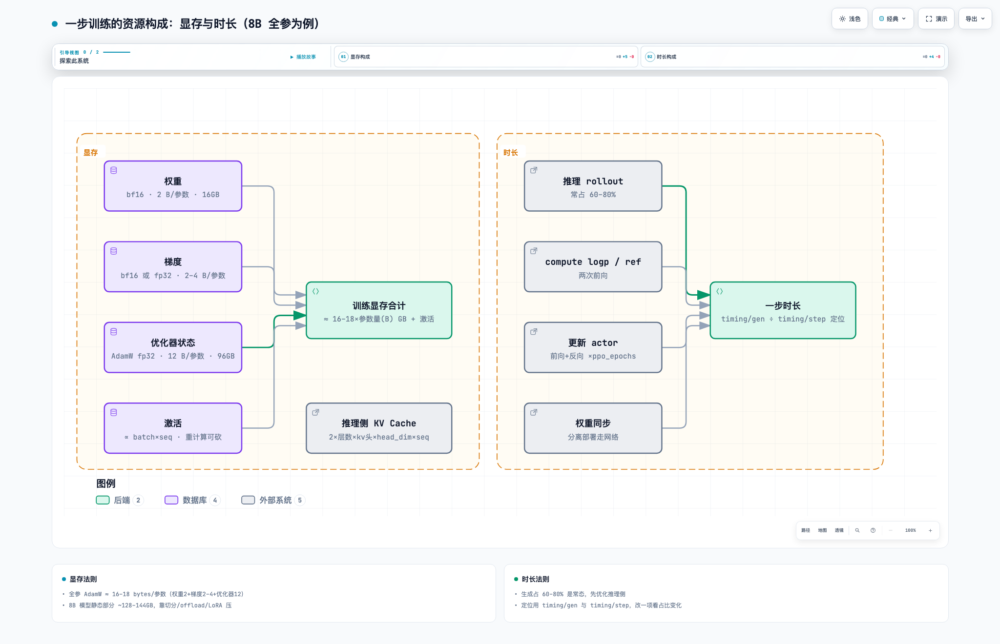

六、性能优化

交互版：rl-11-资源构成.html
1. 显存构成（8B 全参 AdamW bf16 为例）
| 组件 | 大小 | 规则 |
|---|---|---|
| 权重 | 16GB | 2 bytes/参数（bf16） |
| 梯度 | 16–32GB | 2–4 bytes/参数：纯 bf16 训练 2B；精度敏感/大规模常用 fp32 梯度（4B），累加与 reduce 更稳 |
| 优化器状态 | 96GB | 12 bytes/参数（AdamW fp32：master 权重 4 + m 4 + v 4）——大头 |
| 激活 | 可变 | ∝ batch × seq；重计算（activation checkpointing）砍大头，代价 ~30% 重算时间 |
估算法则：全参训练 ≈ 16–18 bytes/参数 + 激活——8B 模型静态部分 ~128–144GB，单卡必然放不下，靠切分 / offload / LoRA 压。LoRA 只训练少量附加参数，优化器状态与梯度只挂在 LoRA 权重上，显存骤减。
推理侧另算 KV Cache：2 × 层数 × kv头数 × head_dim × 序列长 × 字节数 × 并发数，随并发和序列长线性涨——GQA（kv 头少）就是为砍它。
2. 一步时长构成（veRL 观察指标）
| 环节 | veRL 指标 | 占比参考 |
|---|---|---|
| 整步 | timing/step |
100% |
| 推理 rollout | timing/gen |
常占 60–80% |
| 评分 | timing/reward |
小（verify 极快，RM 稍大） |
| compute logp（old + ref） | timing/old_log_prob、timing/RefPolicy |
两次前向 |
| 组内比较 | timing/adv |
可忽略 |
| 更新（前向②+反向 ×ppo_epochs） | timing/update_actor |
次大项 |
| 权重同步 | timing/update_weights |
分离部署走网络，可观 |
| 存档 | timing/save_checkpoint |
按 save_freq 触发 |
定位方法：timing/gen ÷ timing/step 得推理占比，改一项看占比变化，先打最大项——多数 RL 场景最大项是推理。
3. 推理性能优化常见手段
| 参数（引擎配置段） | 作用 | 代价/注意 |
|---|---|---|
enable_chunked_prefill: true + max_num_batched_tokens |
开启分块预填充并设每步 prefill token 预算：调大 prefill 吞吐高，调小 decode 不被长 prefill 阻塞 | 长 prompt / 多轮上下文场景的关键旋钮 |
max_num_seqs |
并发请求数上限。RL rollout 大批量并发（train_batch×G 条），开大才喂得满引擎 | 调大后 KV cache 压力同步增大，配足 KV 容量 |
enable_prefix_caching: true |
前缀 KV 复用：同 prompt 的 G 条采样共享前缀 | SGLang RadixAttention 默认路径；多轮/agent 命中率最高 |
gpu_memory_utilization |
决定 KV 池大小；并发×序列长撑爆池 → 抢占/重算（preemption），吞吐骤降 | 日志见 preemption/swap 即 KV 不够：加比例、降并发或量化 KV |
enforce_eager: false |
启用 CUDA Graph，消 kernel launch 开销，decode 小 kernel 受益最大 | 调试时可置 true 关闭 |
kv_cache_dtype: fp8 / quantization |
量化权重与 KV cache，省显存提带宽 | rollout 精度与训练侧需对齐验证 |
| PD 分离部署（disaggregated prefill/decode） | prefill 与 decode 分卡各自批处理 | 部署复杂；长序列高并发收益大 |
speculative decoding（speculative_model） |
小模型草稿 + 大模型并行验证 | 有草稿模型时可用 |
前三个旋钮联动：max_num_seqs 决定 KV 需求、gpu_memory_utilization 决定池容量、max_num_batched_tokens 决定长短请求怎么交错——调参时一起看。veRL 中位于 actor_rollout_ref.rollout 的引擎配置段。
4. 训练性能优化常见手段
| 手段 | 原理 | 代价/注意 |
|---|---|---|
| 重计算（activation checkpointing） | 不存激活、用时重算 | 显存大降、时长 +~30%；长序列基本必开 |
| offload（param / optimizer） | 用完卸回内存 | 时间换显存，OOM 时的阶梯选项 |
| 并行切分配比 | TP 切算子权重矩阵、PP 切 Transformer 层、EP 切 MoE 专家、CP 切序列 | 跨机 TP 通信代价大，先调 PP/DP |
| 序列并行（SP/CP） | 长序列切给多卡算 attention | ring/Ulysses 等；34K+ 长序列训练的关键 |
| micro batch 调优 | 填满 GPU、避免过小分片 | 过小→算力浪费，过大→OOM，二分试 |
| 混合精度 + fused kernel | bf16 训练、FlashAttention、fused 优化器 | 基本默认开 |
| 通信与计算重叠 | 梯度分桶、reduce 与反向重叠 | 框架内置为主 |
| partial rollout / 异步 | 推理与更新重叠，治长尾 | staleness 偏差（第五章） |
💡涉及特性方案的性能优化就多关注各个RL训推框架动态吧，太多，不做罗列